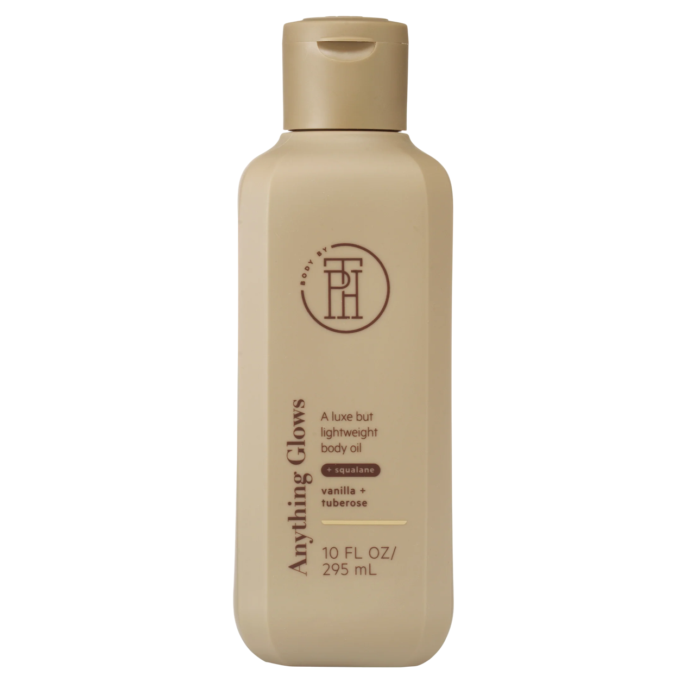

Body Products
Discover your new skin-care essentials. Products that support you on your self-care journey by focusing on your skin-care needs.
A line of bath and body care products, rooted in self-care rituals and designed to provide affordable luxury and spa-like experiences, developed by Taraji P. Henson and her hair care brand TPH by Taraji.
Softer Than No Otha
silkening body butter

Softer Than No Otha vegan nourishing softening body butter lotion with shea butter and moringa oil for dry skin. The name says it all! This decadent body butter lotion packed with rich moringa oil and shea butter nourishes and moisturizes your skin. Solid butter effortlessly melts into your skin to deliver the soft, supple, comfort that only a motha's love can provide.
Anything Glows
body oil for dry skin
Anything Glows vegan lightweight body oil helps quench thirsty, dry skin and features squalane to help moisturize the skin, avocado oil to help protect the skin from dehydration and rosehip oil, to rejuvenate and renew beautiful skin. This luxuriously lightweight body oil helps leave your dry skin feeling moisturized, soft, and radiant. Glow off with a natural dewy glimmer from head to toe.